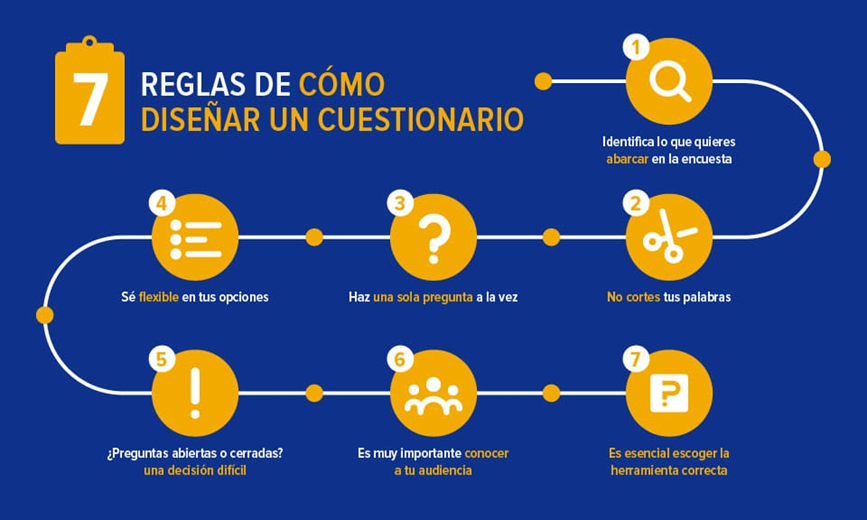

consejos para redactar una encuesta.
Para hacer un cuestionario para una encuesta debes tener un buen diseño. Ninguna encuesta puede recibir una respuesta exitosa si no consideramos este factor. La mayoría de nosotros ha estado en una situación en la cual hemos hecho una compra de una cierta marca o hemos comido en un restaurante y nos han entregado un cuestionario para registrar nuestras respuestas o comentarios acerca del producto o del servicio ofrecido.
¿Cuántos de nosotros simplemente no respondemos los cuestionarios porque son confusos o demasiado largos?
En la mayoría de los casos, el diseño de una encuesta hace que disminuya el entusiasmo del encuestado y no responden correctamente. Los cuestionarios deberían ser diseñados de una manera que sea extremadamente sencillo de entender para el encuestado.
El cuestionario es una parte integral de la investigación de mercado. No es posible extraer la información correcta por parte de los encuestados si no piensas primero en hacer un cuestionario para una encuesta bien diseñado.
En conclusión, la investigación no tiene ningún valor a menos que los datos recolectados sean de gran utilidad para el encuestador.
¿Cómo hacer un cuestionario para una encuesta?
El diseño del cuestionario es un proceso de múltiples pasos que requiere atención a los detalles en cada uno de ellos. Diseñar un cuestionario es algo complejo, porque una encuesta debería estar basada en diferentes temas (¡no todos a la misma vez!) con diversos detalles.
Los investigadores siempre tienen la esperanza de que la respuesta que obtengan ofrezca buenos datos. Al final del día todo se resume a que tan buenos o malos son los datos que uno recibe a través de las encuestas.
Si es demasiado complicado, hay una justa posibilidad en la cual el encuestado podría confundirse y que sea incapaz de contestar adecuadamente.
Antes de hacer un cuestionario para una encuesta deberías realizar una prueba previa a un grupo de personas durante el proceso de desarrollo para obtener un mejor entendimiento de cómo el encuestado responde en dicha prueba.
Una encuesta piloto es una buena práctica ya que te ayudará a conocer, en las etapas iniciales, si se necesita hacer un cambio en la encuesta.

Pasos para hacer un cuestionario para una encuesta
Ahora te presentaré los pasos más importantes que debes considerar en la elaboración de una encuesta:
1. Identifica lo que quieres abarcar en la encuesta: Incluso antes de que pienses en cómo tu encuesta se verá, piensa qué es lo que tu encuesta va a incluir. La claridad en el tema es de suma importancia, pues es el primer paso para diseñar un cuestionario online (por ejemplo). Una vez que tengas claro acerca de qué tratará la encuesta, el resto de los pasos simplemente se darán.
2. Escoge las palabras correctas: Es esencial que las palabras o frases que utilizas mientras creas el cuestionario sean fáciles de entender porque existe la posibilidad de que no todos los encuestados entiendan el significado que conllevan. Si las preguntas no son claras para los encuestados ellos seguramente elegirán alguna otra opción, y al final tendrás datos inexactos.
3. Evita hacer dos preguntas a la vez. En algunas ocasiones el creador de la encuesta podría estar tentado a agregar dos preguntas similares en una sola. Sin embargo, esto también es algo que debería evitarse ya que cada pregunta puede tener un resultado distinto.
4.Ofrece diversas opciones de respuesta: Algunas ocasiones el encuestado no necesariamente quiere elegir de entre las opciones de respuestas que han sido proporcionadas por el creador de la encuesta, en tal situación ayuda tener la opción “otra” u «otro».
5.Usa preguntas abiertas o cerradas: El tipo de preguntas debería ser elegida cuidadosamente. Si la encuesta requiere que el encuestado no limite sus pensamientos, las preguntas abiertas son la mejor opción. Pero, si se quiere una respuesta específica entonces deberías considerar mejor hacer preguntas cerradas.
6.Es importante conocer tu audiencia: Como regla vital, antes de hacer un cuestionario para una encuesta debes conocer a tu audiencia de estudio. Por ejemplo, si la audiencia que se está estudiando habla el idioma portugués, enviar las encuestas en cualquier otro idioma no nos dará las respuestas deseadas.